Automatic Transmission Replacement
AUTOMATIC TRANSMISSION REMOVAL/INSTALLATION1. Disconnect the negative battery cable.
2. Drain the ATF.
3. Remove the exhaust system.
4. Remove the propeller shaft.
Warning: Improperly jacking a transmission is dangerous. It can slip off the jack and cause serious injury.
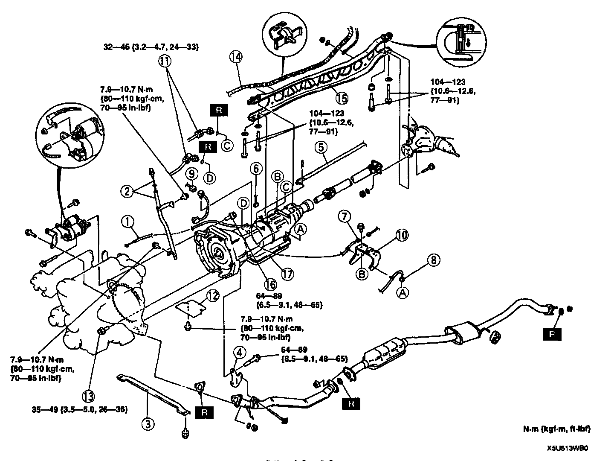
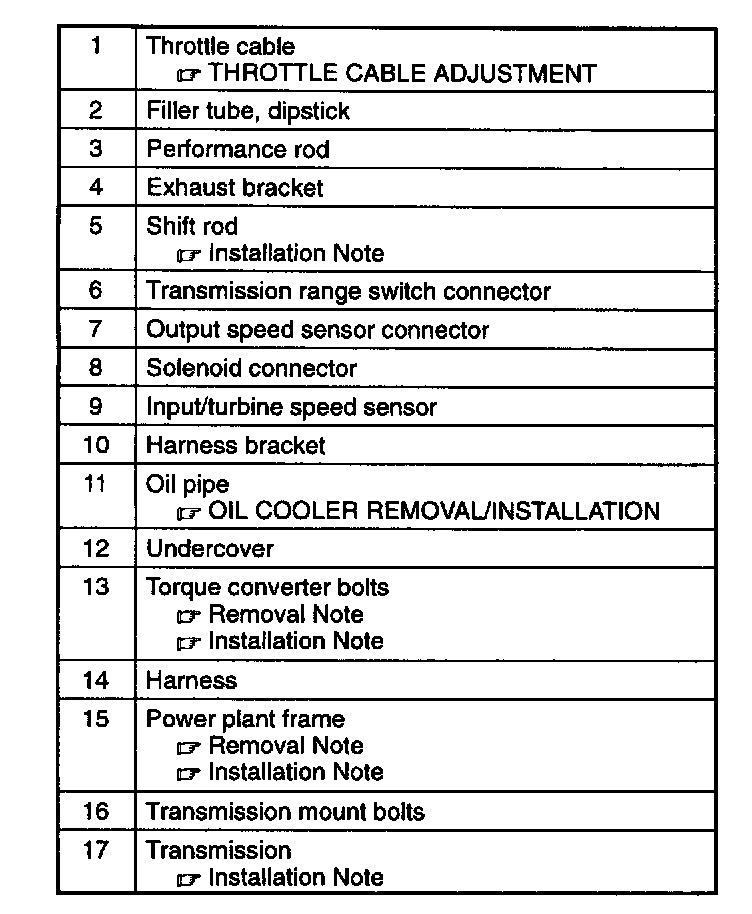
5. Remove in the order indicated in the table.
6. Install in the reverse order of removal.
7. Add ATF to the specified level.
8. Connect the negative battery cable.
9. Inspect the operation of the transmission range switch.
10. Inspect the operation of the selector lever.
11. Carry out the mechanical system test.
12. Carry out the road test.
Power Plant Frame (PPF) Removal Note
1. Disconnect the wire harness from the power plant frame.
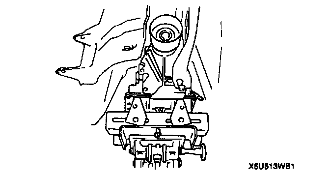
2. Support the transmission on a jack.
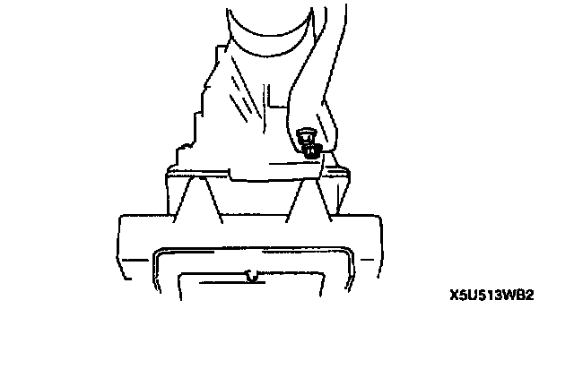
3. Remove the front bolts.
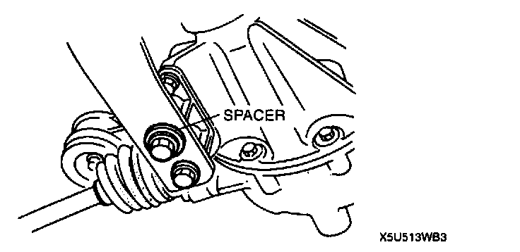
4. Remove the differential side bolts, and pry out the bolt spacer.
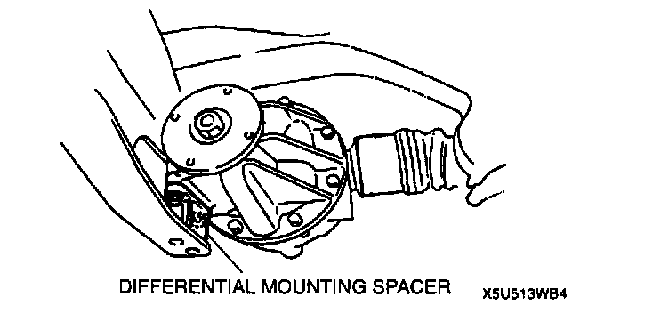
5. Remove the differential mounting spacer.
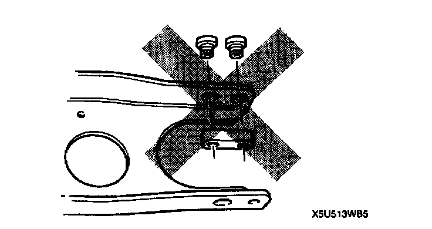
6. Remove the transmission side bolts, and remove the PPF. Do not remove the spacers from the PPF. If they are removed, replace the PPF as an assembly.
Note: If the sleeve cannot be removed easily, tap the side of the sleeve with a plastic hammer.
7. Remove the sleeve.
Transmission Removal Note
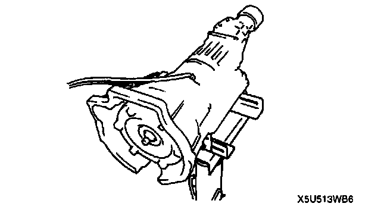
- Set the transmission onto the transmission jack paying special attention not to damage the oil pipes. Make sure that the torque converter side of the transmission is tilted slightly upward during removal. Carefully lower the transmission from the vehicle
Transmission Installation Note
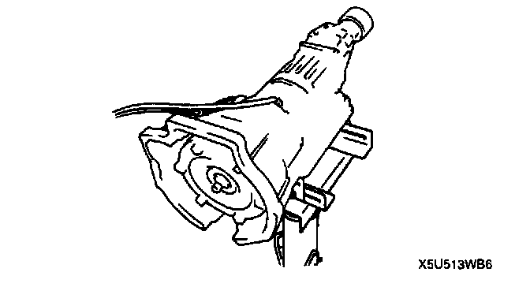
- Set the transmission onto the transmission jack, paying special attention not to damage the oil pipes. Make sure that the torque converter side of the transmission is tilted slightly upward.
Torque Converter Bolts Installation Note
1. Align the holes by turning the torque converter.
2. Lock the drive plate by using a screwdriver.
3. Hand-tighten the torque converter mounting bolts in a crisscross pattern.
4. Modify the torque converter mounting bolts tightening torque to allow for a torque wrench SST combination.
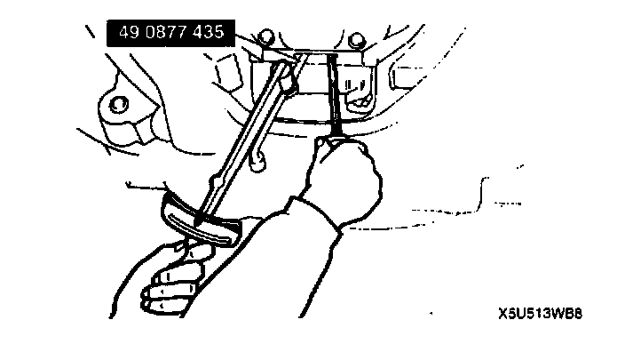
5. Tighten the torque converter mounting bolts by using the SST.
Tightening torque 35 - 49 Nm (3.5 - 5.0 kgf m, 26 - 36 ft. lbs.)
Power Plant Frame (PPF) Installation Note
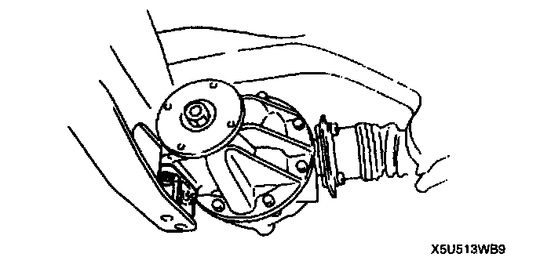
1. Install the differential mounting spacer.
2. Support the transmission on a jack so that it is level.
3. Position the PPF and install the sleeve.
4. Install the spacer and bolts, and snugly tighten the reamer bolt. The reamer bolt should be installed in the forward hole.
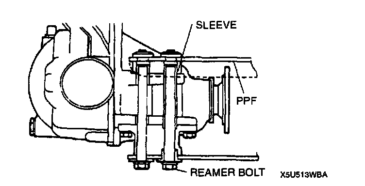
5. Tighten the outer bolts snugly.
Tightening torque 104 - 123 Nm (10.6 - 12.6 kgf-m, 77 - 91 ft. lbs.)
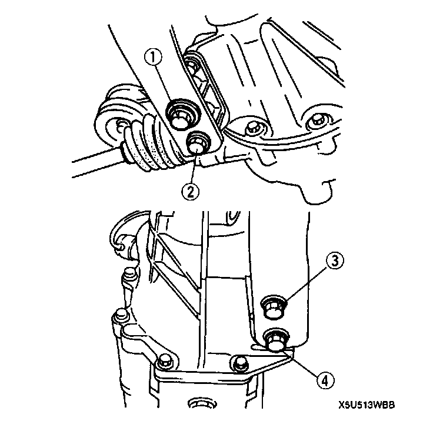
6. Tighten the bolts to the specified torque in the order shown.
Tightening torque 104 - 123 Nm (10.6 - 12.6 kgf-m, 77 - 91 ft. lbs.)
7. Remove the jack.
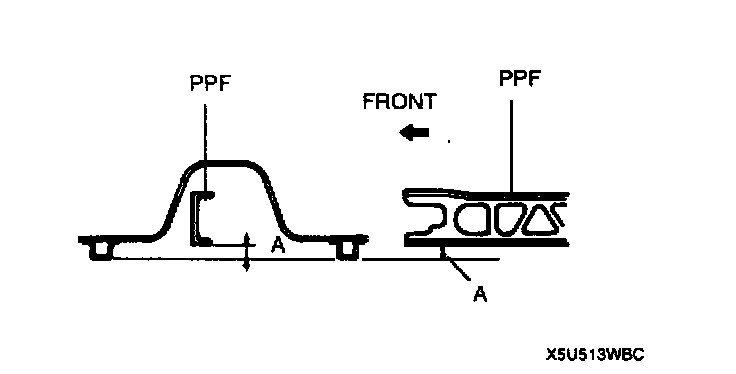
8. Measure distance A by using a straightedge and vernier calipers.
Distance A 50.5 - 62.5 mm (1.9 - 2.46 inch)
9. If the distance is not within the specification, reposition the power plant frame at the transmission.